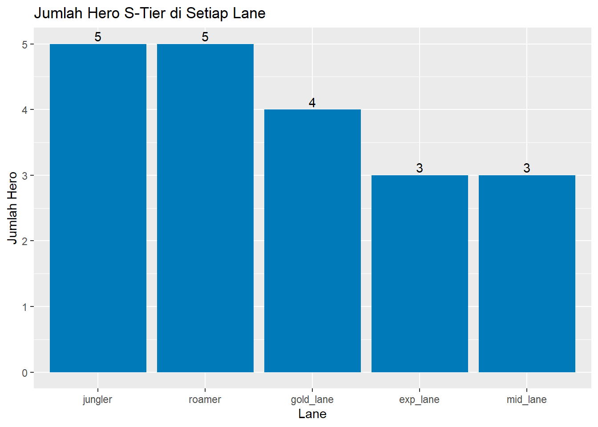
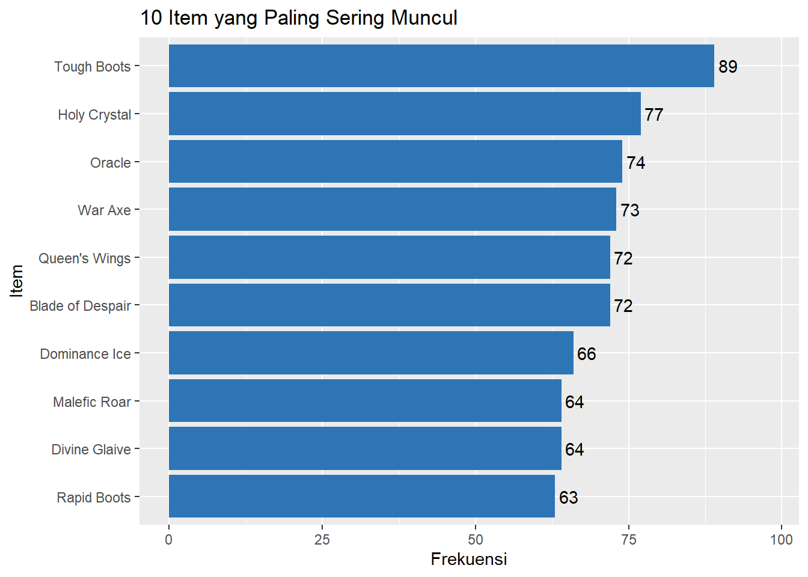
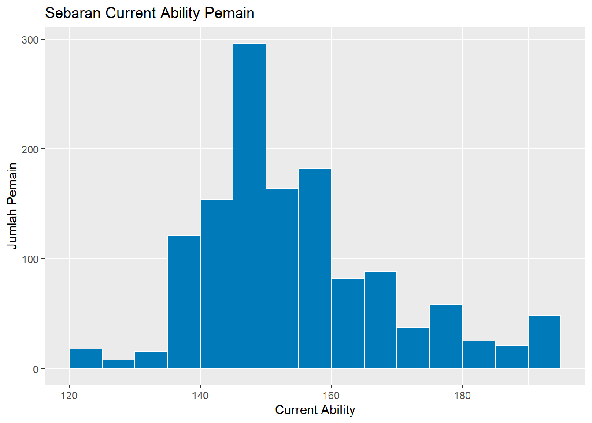
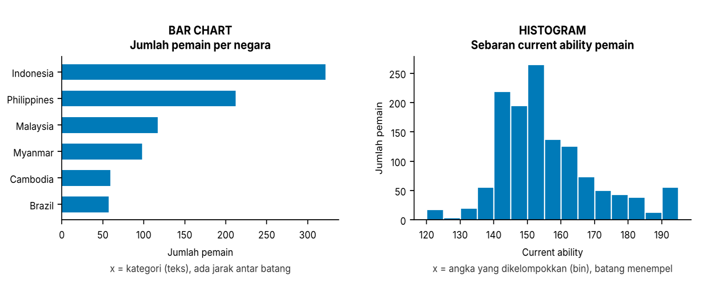
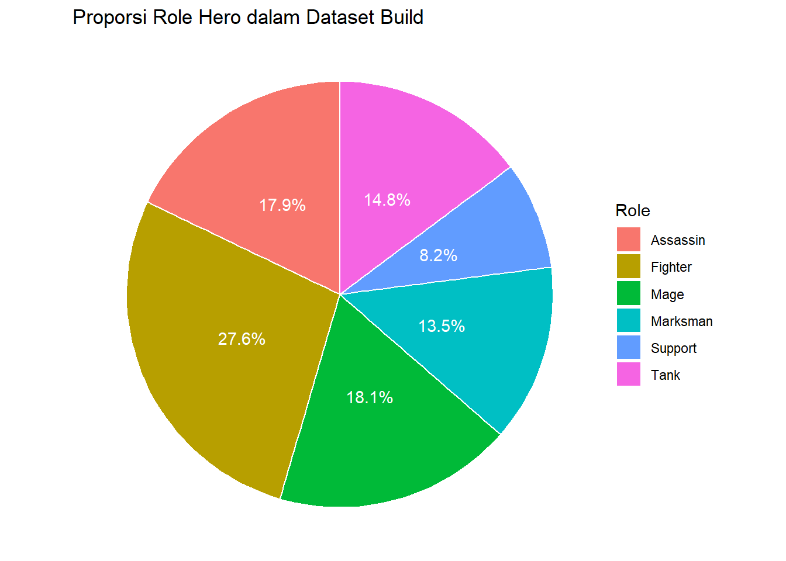
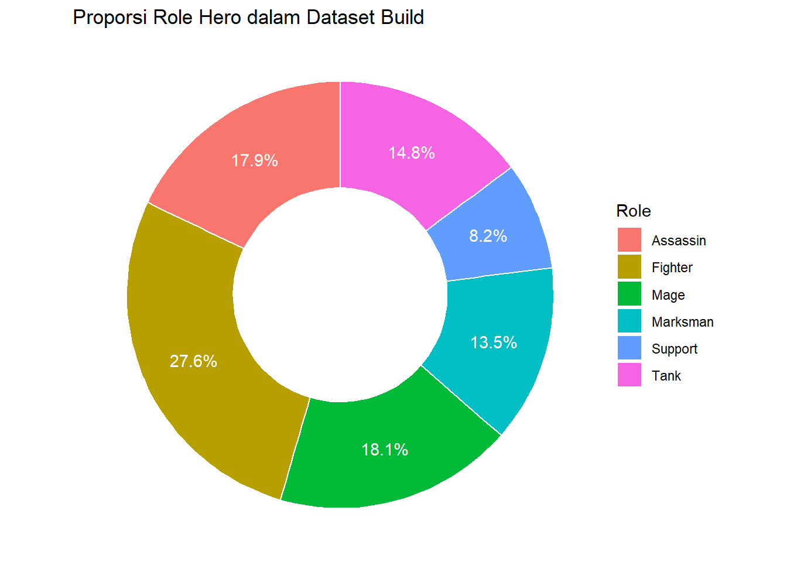
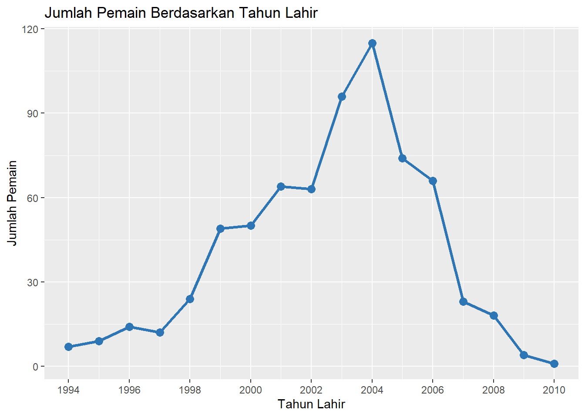
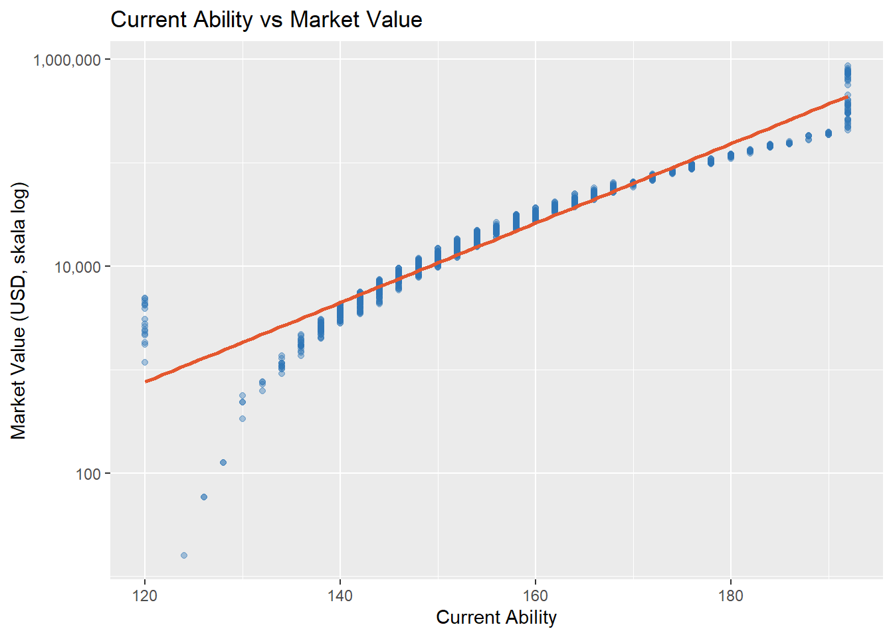
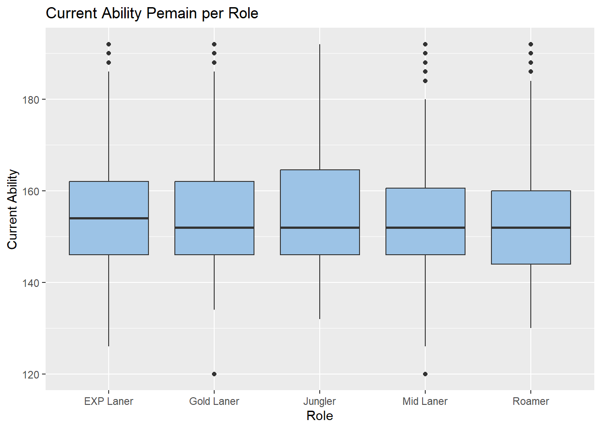

library(tidyverse) # berisi ggplot2, dplyr, tidyr, stringr
library(scales) # untuk format angka (comma)
url_data <- "https://raw.githubusercontent.com/Muhammadrizkybagas/mlbb-dataset/refs/heads/main/data/"
meta <- read.csv(paste0(url_data, "meta-draftpick-ml.csv"))
build <- read.csv(paste0(url_data, "build-item.csv"))
players <- read.csv(paste0(url_data, "players.csv"))
stat <- read.csv(paste0(url_data, "stat-player.csv"))
# nama kolom di stat-player.csv
stat <- stat %>%
rename(
role = player_info_role,
current_ability = hidden_and_non_technical_hidden_current_ability,
market_value_usd = hidden_and_non_technical_business_market_value_usd
)Memilih Visualisasi Yang Tepat
Di bab ini kita tidak hanya belajar membuat grafik, tetapi belajar menjawab satu pertanyaan:
Grafik apa yang paling tepat untuk data dan pertanyaan yang kita punya?
Setelah bab ini, kamu bisa:
- Menentukan pertanyaan sebelum membuat grafik,
- Memilih jenis grafik yang sesuai dengan jenis data dan pertanyaannya,
- Membuat beberapa jenis grafik dengan
ggplot2di R.
1 Mulai dari Pertanyaan
Sebelum membuat grafik, tentukan dulu apa yang ingin dijawab. Contoh:
“Lane mana yang memiliki hero S-Tier paling banyak?” - butuh data
lanedanpriority_tier.
“Apakah pemain dengan kemampuan lebih tinggi punya market value lebih besar?” berarti kita butuh dua kolom angka:
current_abilitydanmarket_value_usd.
TipTips
Prinsip sederhana: start with a question, not a chart. Jangan pilih grafik dulu, lalu mencari alasan untuk memakainya.
1.1 Dataset yang Digunakan
| Dataset | Contoh variabel |
|---|---|
meta-draftpick-ml.csv |
lane, priority_tier, hero_name |
players.csv |
role, country, winnings |
stat-player.csv |
current_ability, market_value_usd, star_power |
build-item.csv |
battle_spell, item_1–item_6, role |
tournament.csv |
name_turnament, prize_pool, location |
Panggil library dan baca semua dataset sekali di awal. Gunakan raw URL seperti di Chapter 1.
WarningPerhatikan
Jika library(tidyverse) belum terpasang, jalankan sekali di Console: install.packages("tidyverse"). Untuk scales sama: install.packages("scales").
2 Memilih Grafik
Cara paling cepat memilih grafik: lihat bentuk pertanyaannya.
| Pertanyaan yang ingin dijawab | Grafik | Contoh dari dataset |
|---|---|---|
| Mana yang paling banyak / sedikit? Bandingkan antar kategori | Bar chart | Hero S-Tier per lane |
| Bagaimana sebaran data angka? Di mana data paling banyak? | Histogram | Sebaran current ability |
| Berapa proporsi tiap bagian terhadap total? (maks. 5-6 kategori) | Pie / Donut chart | Proporsi role hero |
| Bagaimana perubahan berdasarkan urutan atau waktu? | Line chart | Jumlah pemain per tahun lahir |
| Apakah dua angka saling berhubungan? | Scatter plot | Ability vs market value |
| Bagaimana sebaran angka antar kelompok? | Box plot | Ability pemain per role |
2.1 Bar Chart
NoteBar Chart
Membandingkan nilai antar kategori. Cocok untuk pertanyaan: mana yang paling banyak? mana yang paling sedikit? bagaimana perbedaan antar kategori?
2.1.1 Hero S-Tier di Setiap Lane
“Lane mana yang memiliki hero S-Tier paling banyak?”
# filter hero S-Tier, lalu hitung jumlahnya per lane
lane_s <- meta %>%
filter(priority_tier == "S-Tier") %>%
count(lane)
ggplot(lane_s, aes(x = reorder(lane, -n), y = n)) +
geom_col(fill = "#007AB8") +
geom_text(aes(label = n), vjust = -0.3) +
labs(
title = "Jumlah Hero S-Tier di Setiap Lane",
x = "Lane",
y = "Jumlah Hero"
)
NoteHasil
Jungler dan Roamer punya hero S-Tier terbanyak (masing-masing 5), disusul gold lane (4), lalu exp lane dan mid lane (masing-masing 3). Dengan bar chart, perbandingan ini terbaca sekilas, tidak perlu membaca daftar hero satu per satu.
2.1.2 Item yang Sering Dipakai
“Item apa yang paling sering muncul di build hero?”
item_count <- build %>%
select(starts_with("item_")) %>% # ambil kolom item_1 - item_6
pivot_longer(cols = everything(),
names_to = "slot", values_to = "item") %>%
filter(!is.na(item), item != "") %>% # buang item kosong
count(item, sort = TRUE) %>% # hitung tiap item
slice_head(n = 10) # ambil 10 teratas
ggplot(item_count, aes(x = reorder(item, n), y = n)) +
geom_col(fill = "#2E75B6") +
geom_text(aes(label = n), hjust = -0.2) +
coord_flip() + # jadikan batang horizontal
expand_limits(y = max(item_count$n) * 1.1) + # beri ruang untuk label angka
labs(title = "10 Item yang Paling Sering Muncul",
x = "Item", y = "Frekuensi")
NoteHasil
Tough Boots paling sering muncul (89 kali), disusul Holy Crystal (77) dan Oracle (74).
WarningPenting
Kalau nama kategori panjang (seperti nama item), gunakan bar chart horizontal dengan coord_flip() agar label tidak bertabrakan.
2.2 Histogram
NoteHistogram
Melihat sebaran data angka: di rentang mana data paling banyak, apakah simetris atau miring, dan apakah ada nilai yang menonjol.
“Bagaimana sebaran current ability para pemain?”
ggplot(stat, aes(x = current_ability)) +
geom_histogram(binwidth = 5, boundary = 120,
fill = "#007AB8", color = "white") +
labs(
title = "Sebaran Current Ability Pemain",
x = "Current Ability",
y = "Jumlah Pemain"
)
NoteHasil
Current ability berkisar 120 sampai 192. Kebanyakan pemain ada di kisaran 140-165 dengan puncak sekitar nilai 150, lalu makin tinggi ability makin sedikit pemainnya. Ada lonjakan kecil di ujung kanan (sekitar 190-195).
WarningCoba Sendiri
Ubah binwidth menjadi 2 dan 10. Bin terlalu kecil membuat grafik bergerigi, bin terlalu besar menyembunyikan bentuk sebaran. Pilih yang paling jelas menunjukkan pola.
2.2.1 Histogram dan Barchart
Keduanya sama-sama berbentuk batang, jadi sering tertukar. Bedanya ada pada data di sumbu x.

| Bar chart | Histogram | |
|---|---|---|
| Data di sumbu x | Kategori (teks), misal negara atau role | Angka yang dikelompokkan jadi rentang (bin) |
| Jarak antar batang | Ada jarak | Menempel, tanpa jarak |
| Urutan batang | Boleh diurutkan bebas (misal dari terbesar) | Tetap mengikuti urutan angka |
| Tujuan | Membandingkan kategori | Melihat bentuk sebaran data |
| Fungsi ggplot2 | geom_col() atau geom_bar() |
geom_histogram() |
| Contoh | Jumlah pemain per negara | Sebaran current ability |
TipCara Cepat Membedakan
Tanya: sumbu x-nya kategori atau angka? Kategori = bar chart. Angka kontinu = histogram.
2.3 Pie Chart dan Donut Chart
NotePie Chart dan Donut Chart
menunjukkan proporsi tiap bagian terhadap total (100%). Cocok kalau kategorinya sedikit, maksimal 5-6, dan kita hanya ingin melihat bagian mana yang dominan.
“Bagaimana komposisi role hero dalam dataset build?”
2.3.1 Pie Chart
Satu build bisa punya dua role (contoh: Fighter, Assassin). Kita pisahkan dulu dengan separate_rows(), sehingga build itu dihitung di kedua role.
role_count <- build %>%
separate_rows(role, sep = ",\\s*") %>% # pisahkan role yang berisi dua nilai
count(role) %>%
mutate(persen = n / sum(n) * 100)
# Pie chart
ggplot(role_count, aes(x = "", y = n, fill = role)) +
geom_col(width = 1, color = "white") +
geom_text(aes(label = paste0(round(persen, 1), "%")),
position = position_stack(vjust = 0.5), color = "white") +
coord_polar(theta = "y") +
labs(title = "Proporsi Role Hero dalam Dataset Build", fill = "Role") +
theme_void()
2.3.2 Donut Chart
Ubah x = "" menjadi x = 2, lalu tambahkan xlim(0.5, 2.5) di bawah coord_polar().
ggplot(role_count, aes(x = 2, y = n, fill = role)) +
geom_col(width = 1, color = "white") +
geom_text(aes(label = paste0(round(persen, 1), "%")),
position = position_stack(vjust = 0.5), color = "white") +
coord_polar(theta = "y") +
xlim(0.5, 2.5) +
labs(title = "Proporsi Role Hero dalam Dataset Build", fill = "Role") +
theme_void()
NoteHasil
Fighter paling dominan (27,6%), diikuti Mage (18,1%) dan Assassin (17,9%). Support paling kecil (8,2%).
WarningIngat
Kapan jangan pakai pie? Kalau kategori lebih dari 6, atau selisih antar bagian kecil dan perlu dibandingkan teliti.
2.4 Line Chart
NoteLine Chart
Menunjukkan perubahan atau pola berdasarkan urutan yang bermakna, terutama waktu. Garis menghubungkan titik-titik yang berurutan.
“Bagaimana jumlah pemain berubah dari tahun lahir ke tahun lahir?”
Kolom birthday berisi teks seperti October 13, 2005 (age 20). Kita ambil 4 angka tahunnya dengan str_extract().
birth <- players %>%
mutate(tahun_lahir = as.numeric(str_extract(birthday, "\\d{4}"))) %>%
filter(!is.na(tahun_lahir), tahun_lahir >= 1994) %>% # sebelum 1994 datanya sangat sedikit
count(tahun_lahir)
ggplot(birth, aes(x = tahun_lahir, y = n)) +
geom_line(color = "#2E75B6", linewidth = 1.2) +
geom_point(color = "#2E75B6", size = 3) +
scale_x_continuous(breaks = seq(1994, 2010, by = 2)) +
labs(
title = "Jumlah Pemain Berdasarkan Tahun Lahir",
x = "Tahun Lahir",
y = "Jumlah Pemain"
)
NoteHasil
jumlah pemain naik dari kelahiran 1994 sampai puncaknya di 2004 (115 pemain), lalu turun. Data ini hanya mencakup pemain yang mencantumkan tanggal lahir (694 pemain).
WarningSyarat Line Chart
Sumbu x harus berurutan (waktu atau angka). Jangan pakai untuk kategori yang tidak berurutan, misalnya jumlah hero per lane.
2.5 Scatter Plot
NoteLine Chart
Melihat hubungan antara dua variabel angka. Setiap titik mewakili satu data (di sini, satu pemain).
“Apakah pemain dengan kemampuan lebih tinggi memiliki market value yang lebih besar?”
ggplot(stat, aes(x = current_ability, y = market_value_usd)) +
geom_point(alpha = 0.4, color = "#2E75B6") +
geom_smooth(method = "lm", se = FALSE, color = "#E4572E") + # garis tren
scale_y_log10(labels = comma) + # skala log di sumbu y
labs(
title = "Current Ability vs Market Value",
x = "Current Ability",
y = "Market Value (USD, skala log)"
)
NoteHasil
Titik-titik naik dari kiri bawah ke kanan atas. Artinya makin tinggi current ability, makin tinggi market value (hubungan positif yang kuat).
WarningHati-hati
Hubungan antara dua angka belum tentu sebab-akibat. Scatter plot hanya menunjukkan bahwa keduanya bergerak bersama.
2.6 Box Plot
NoteBox Plot
Melihat hubungan antara dua variabel angka. Setiap titik mewakili satu data (di sini, satu pemain).
“Apakah current ability berbeda antar role pemain?”
role_utama <- c("Roamer", "Mid Laner", "EXP Laner", "Gold Laner", "Jungler")
stat %>%
filter(role %in% role_utama) %>%
ggplot(aes(x = role, y = current_ability)) +
geom_boxplot(fill = "#9CC3E6") +
labs(
title = "Current Ability Pemain per Role",
x = "Role",
y = "Current Ability"
)
TipCara Membaca Box Plot
- Kotak = 50% data di tengah (dari kuartil 1 sampai kuartil 3).
- Garis tebal di dalam kotak = median (nilai tengah).
- Garis di atas dan bawah kotak = rentang data yang wajar.
- Titik terpisah = outlier, yaitu nilai yang jauh dari kebanyakan data.
NoteHasil
Kelima role punya median yang hampir sama (sekitar 152-154). Jadi role pemain tidak membuat current ability berbeda jauh. Titik-titik di bagian atas adalah pemain dengan ability sangat tinggi.
3 Kesalahan yang Sering Terjadi
| Kesalahan | Perbaikan |
|---|---|
| Pie chart dengan banyak kategori | Pakai bar chart, maksimal 5-6 bagian untuk pie |
| Line chart untuk kategori yang tidak berurutan | Pakai bar chart |
| Sumbu y bar chart tidak dimulai dari 0 | Mulai dari 0, supaya tinggi batang tidak menipu |
| Histogram dengan bin terlalu kecil atau terlalu besar | Coba beberapa binwidth dan pilih yang paling jelas |
| Memakai histogram untuk data kategori | Pakai bar chart |
| Terlalu banyak warna | Pakai satu warna, kecuali perlu membedakan kelompok |
| Tanpa judul dan label sumbu | Selalu isi labs(title, x, y) |
4 Ringkasan
- Mulai dari pertanyaan, bukan dari grafik.
- Bar chart untuk membandingkan kategori, histogram untuk melihat sebaran angka.
- Pie/donut untuk proporsi dengan kategori sedikit, line chart untuk data berurutan atau waktu.
- Scatter plot untuk hubungan dua angka, box plot untuk membandingkan sebaran antar kelompok.
- Selalu beri judul dan label sumbu agar grafik bisa dipahami tanpa penjelasan.